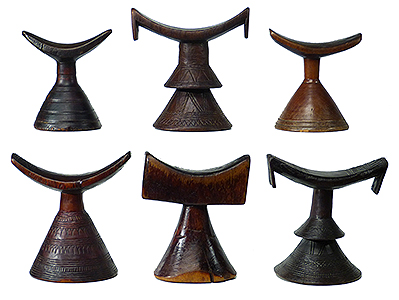

Culture Overview
Ethiopia has a rich cultural heritage that is celebrated in its diverse traditions, music, and arts.
Image Gallery
Traditional Dance
Eskista is a traditional Ethiopian dance renowned for its energetic and rhythmic movements, typically showcased during celebrations and festivals..

Cultural Artifacts
Ethiopian cultural artifacts include ancient manuscripts, religious relics, and traditional clothing that reflect the country's rich history and heritage.
Traditional Clothing
Ethiopian traditional clothing, such as the 'habesha kemis,' is known for its intricate patterns and vibrant colors, often worn during special occasions.